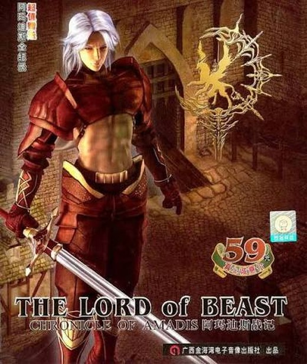
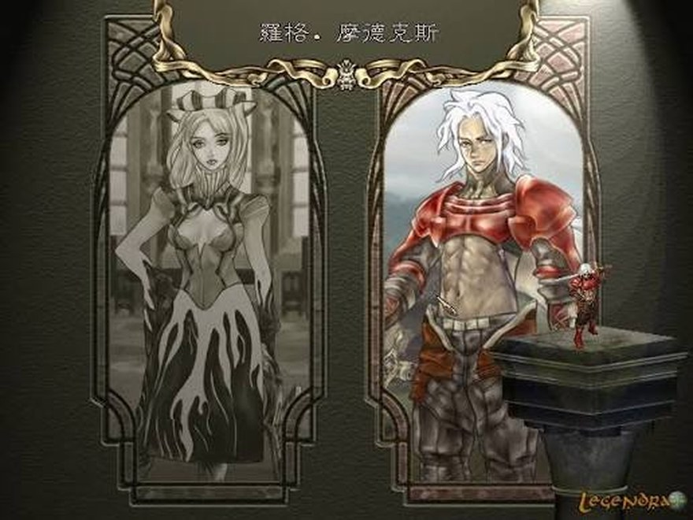
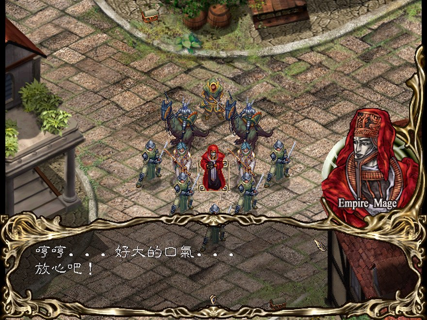
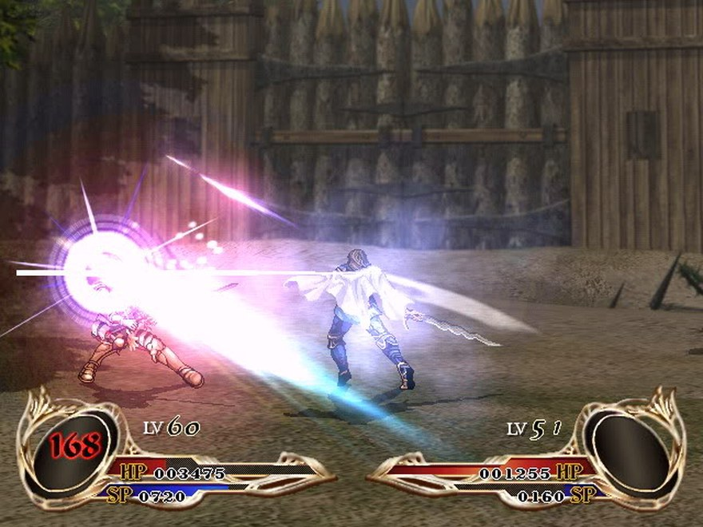
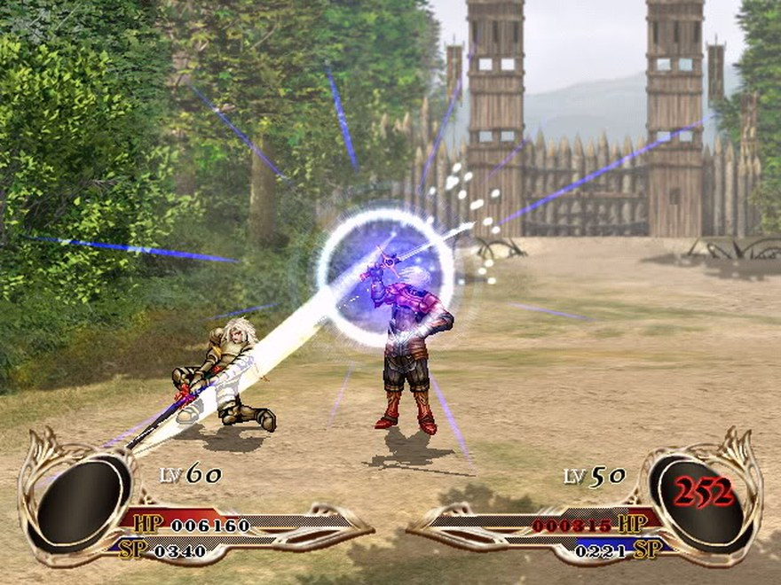

Lúc gõ những dòng này, ngoài trời đang mưa. Trong tai nghe, Apple Music shuffle trúng bài "Mưa" của Thùy Chi bản M4U — cái giai điệu buồn buồn cũ cũ ấy. Và không hiểu sao, chỉ cần bấy nhiêu đó thôi, tớ bị kéo tuột về hơn hai mươi năm trước, về một đêm cũng mưa rả rích, một thằng nhóc cấp 2 ngồi trước con máy tính tàng dì cho, dán mắt vào một trò chơi mà nó gần như không đọc nổi một chữ.
Trò đó tên The Lord of Beast: Chronicle of Amadis. Và tớ nghĩ rất ít người Việt từng nghe tên nó.
Tớ biết đến The Lord of Beast từ hồi còn nhỏ xíu, cấp 2. Máy thì là con máy cũ dì cho — thuộc dạng chạy được là mừng, đừng đòi hỏi gì thêm. Ông anh hàng xóm (lại là ổng) thì chơi bản trên máy nhà ổng. Sau này lên cấp 3, một thằng bạn thân của tớ cũng lây cái "bệnh" này, ôm con game đó chơi theo. Ba đứa, ba con máy khác nhau, chung một thế giới.
Mà chơi thời đó đúng nghĩa là mò. Game tiếng Trung xen tiếng Anh, mà vốn tiếng Anh của tớ hồi cấp 2 đếm được trên đầu ngón tay, còn tiếng Trung thì xí xa xí xô nhìn như hình vẽ. Thành ra cả quá trình chơi là một cuộc giải mã: bấm thử từng nút một rồi ghi nhớ. À, cái nút này là save. Cái này load lại lượt. Cái nút đỏ đỏ góc kia là quit — bấm nhầm một lần là nhớ đời.
Đồ đạc cũng đoán mò nốt. Thấy cái dép ghi "+2" thì tự suy ra chắc cộng 2 tốc độ. Cái áo "+5" chắc cộng giáp. Đúng sai gì tính sau, cứ gắn vô người rồi ra trận thử, thắng thì là đoán đúng, thua thì... load lại. Mà game này thì siêu khó — đúng chất SRPG cổ điển, một quyết định sai trên bản đồ chiến thuật là có thể phải chơi lại cả màn. Không có internet để tra, không có ai chỉ, chỉ có một thằng nhóc, một con máy tàng, và sự lì lợm của tuổi thơ.
Vậy mà tớ đánh tới tận end game.
Giờ nghĩ lại vẫn thấy hơi khó tin. Có lẽ chính vì hồi đó thiếu thốn đủ thứ — thiếu game, thiếu thông tin, thiếu cả khả năng đọc hiểu — mà mỗi thứ vớ được đều quý, đều được nhấm nháp tới tận cùng. Bây giờ game hay đầy rẫy, tải phát chơi liền, có walkthrough tận răng, vậy mà chẳng cái nào in sâu bằng cái trò không-lời tớ mò mẫm trong những đêm mưa đó.
Phải thành thật: hồi nhỏ tớ chơi mà gần như không hiểu cốt truyện. Tiếng Trung không đọc được, tiếng Anh bập bõm, nên với tớ ngày đó game chỉ là "đánh nhau đẹp và khó". Cả phần dưới đây là tớ mãi sau này lục lại wiki tiếng Trung mới ghép ra được.
Bối cảnh là lục địa Amadis, nơi ba quốc gia chia nhau cát cứ: đế quốc quân sự Languedoque mạnh nhất lục địa, quốc gia thương mại Konquiem gồm nhiều thành bang hợp thành theo kiểu cộng hòa, và một giáo quốc nhỏ ở vùng biên. Đây là một thế giới người và ma thú sống song song — và một số ít người có khả năng giao tiếp, điều khiển ma thú, được gọi là "sứ giả ma thú", trở thành thứ vũ khí đáng sợ mà mọi thế lực quân sự đều thèm khát.
Câu chuyện bắt đầu bằng một cuộc xâm lược. Tướng Shaft của đế quốc Languedoque đem kỵ binh hạng nặng đánh vào Konquiem, bắt giam quốc vương và hoàng hậu. Công chúa Viora được đội trưởng cận vệ Orlando hộ tống chạy thoát khỏi hoàng thành, rồi bị quân đế quốc truy đuổi ráo riết ngoài đồng hoang — cho đến khi được một chàng trai vùng biên tên Rogue cứu. Từ đó cả nhóm dấn thân đi tìm nguyên nhân thật sự đằng sau cuộc xâm lược đột ngột, và bước lên con đường phục quốc.
Điều thú vị là bạn chọn chơi theo Rogue hay Viora, và hai tuyến tuy chung mạch chính nhưng khác nhau về sự kiện, đồng đội, tình tiết — nghe nói tuyến Viora khó hơn hẳn. Game động tới những chủ đề chẳng hề trẻ con: tình yêu và phản bội, cứu chuộc và cái chết, xung đột tôn giáo với thế tục. Nghĩ lại thấy hơi tiếc — hồi đó tớ cầm trên tay cả một thiên anh hùng ca mà chỉ mải mê xem hiệu ứng skill nổ đẹp cỡ nào.

Về cơ bản đây là SRPG chiến thuật theo lượt: mỗi phe lần lượt điều quân trên bản đồ, đánh hết bên này tới bên kia, tới khi một phe bị xóa sổ hoặc đạt điều kiện thắng màn. Ai chơi Fire Emblem hay Tactics Ogre sẽ thấy quen tay ngay.
Nhưng The Lord of Beast có vài thứ của riêng nó. Thứ nhất là chiến đấu theo phương ngang — một góc nhìn ít gặp trong SRPG cùng thời, làm mấy pha giao tranh thêm phần dồn dập. Thứ hai, và là linh hồn của game: hệ thống ma thú tiến hóa. Ma thú cũng lên cấp qua từng trận, và bạn được chọn con nào sẽ tiến hóa, theo nhánh nào — quyết định đó định hình hình dạng lẫn sức mạnh tương lai của nó. Nghe nói có tới hàng trăm nhánh tiến hóa, và sau khi tiến hóa, ma thú còn liên kết thuộc tính với chủ nhân. Hồi nhỏ tớ nghịch cái này thuần theo bản năng — thấy con thú lớn lên, đổi hình là khoái — mà không hề biết mình đang đưa ra những lựa chọn ảnh hưởng cả game.

Và game khó. Khó thật sự. Đúng chất SRPG cổ điển: một nước đi sai trên bản đồ có thể kéo sập cả màn, mà mỗi màn chỉ lưu được một điểm save duy nhất giữa trận — sai là trả giá. Với một thằng nhóc không đọc nổi hướng dẫn, mỗi màn thắng được là một chiến công nhỏ. Tớ vẫn không hiểu bằng cách nào hồi đó mình lì tới mức đánh thông tới cuối.
Cái níu tớ lại đầu tiên, và mạnh nhất, là hình ảnh. Tạo hình nhân vật đẹp một cách choáng váng với con mắt trẻ con thời đó — và tớ vẫn giữ nguyên ý kiến: đặt cạnh Fire Emblem: Sacred Stones trên GBA đang hot lúc bấy giờ, tớ thấy nét vẽ của The Lord of Beast còn nhỉnh hơn.
Sau này tớ mới biết game cố tình bỏ phong cách Nhật để theo thẩm mỹ phương Tây, lấy cảm hứng từ vùng cao nguyên Scotland, và dồn công sức vào nghiên cứu trang phục nhân vật lẫn chi tiết bối cảnh. Game dùng đồ họa 2.5D, và bản đồ chiến trường có cả hiệu ứng thời tiết động — mưa, mây, tuyết rơi ngay trong màn. Giờ nghĩ lại mới thấy rùng mình một cái trùng hợp: một game mà tớ luôn nhớ gắn với những đêm mưa, thì bản thân nó cũng có mưa rơi ngay trên chiến trường.
Skill thì ngầu khỏi bàn — mỗi lần tung chiêu là hiệu ứng nổ ì xèo, ánh sáng phủ kín màn hình. Với đứa nhóc mê game, chỉ riêng khoản trình diễn đó đã đủ để ngồi lì cả buổi tối.


Nếu hình ảnh là thứ níu tớ lại lúc đầu, thì âm nhạc là thứ ở lại lâu nhất — lâu hơn cả cốt truyện tớ chẳng hiểu.
Nhạc trong The Lord of Beast do bộ phận âm nhạc của Hantang (Dynasty) soạn, chủ đạo là nhạc giao hưởng, phối để vẽ nên cái không khí Trung Cổ phương Tây vừa hùng tráng vừa u hoài. Mấy bản battle theme là thứ tớ nhớ rõ nhất — cái cảm giác vào trận, nhạc dồn lên, skill nổ tung tóe, tất cả khớp vào nhau thành một buổi trình diễn.
Đây cũng là điểm khiến game tuy vô danh mà lại có một di sản nho nhỏ: soundtrack của nó nổi tiếng trong cộng đồng game Hoa ngữ tới mức nhiều game làm bằng RPG Maker cuối những năm 2000 đã đi mượn nhạc của nó — nổi nhất là hai bản "Dance With Wind" và "Giant Killer". Cả một thế hệ người chơi từng nghe nhạc của The Lord of Beast mà không hề biết nó đến từ đâu.
Có những game bị lãng quên vì dở. The Lord of Beast bị lãng quên vì một lý do buồn hơn: nó không có cơ hội. Không bản tiếng Anh chính thức, không phát hành rộng ra phương Tây, không marketing, không cửa hàng số nào bán lại. Nó ra đời ở một thị trường hẹp, bằng một thứ tiếng mà phần lớn thế giới không đọc được, rồi lặng lẽ biến mất.
Nếu nó sinh ra ở Nhật, được localize tử tế, biết đâu hôm nay người ta đã nhắc tên nó cùng mâm với Fire Emblem hay Tactics Ogre. Thay vào đó, nó chỉ còn sống trong ký ức của một nhóm nhỏ — mấy đứa nhóc Đài Loan, Trung Quốc, và vài thằng nhóc Việt Nam ngồi mò game trong đêm mưa như tớ.
Mà nói thật, chính vì hiếm, vì khó, vì không ai biết, mà nó mới quý đến vậy. Một viên ngọc nằm giữa đường thì ai cũng nhặt. Viên ngọc phải mò trong bùn, trong mưa, trong mấy dòng chữ không đọc nổi — mới là viên mình nhớ cả đời.
Bài "Mưa" của Thùy Chi vẫn đang ngân trong tai nghe. Ngoài trời mưa chưa dứt.
Ba đứa tụi tớ giờ mỗi người một phương — ông anh hàng xóm, thằng bạn thân, và tớ. Không biết còn ai nhớ cái game không tên tuổi mà tụi tớ từng chụm đầu vào giải mã không. Chắc là mờ nhạt hết rồi. Nhưng chỉ cần một đêm mưa, một giai điệu cũ, là tớ lại thấy mình mười mấy tuổi, ngồi trước con máy tàng của dì, đoán xem cái dép kia cộng mấy điểm tốc độ.
Có những trò chơi ta nhớ vì nó vĩ đại. Có những trò ta nhớ chỉ vì nó ở đó, đúng lúc, trong một đêm mưa. The Lord of Beast là loại thứ hai — và với tớ, loại thứ hai mới là loại ở lại lâu nhất.
The Lord of Beast: Chronicle of Amadis gần như không thể mua hợp pháp ở thời điểm này — không bản số, không tái phát hành. Nhưng nếu bạn tò mò muốn nhìn tận mắt cái thế giới tớ vừa kể, dưới đây là playlist gameplay đầy đủ. Cứ mở lên nghe thử nhạc — biết đâu bạn cũng nghe thấy tiếng mưa.